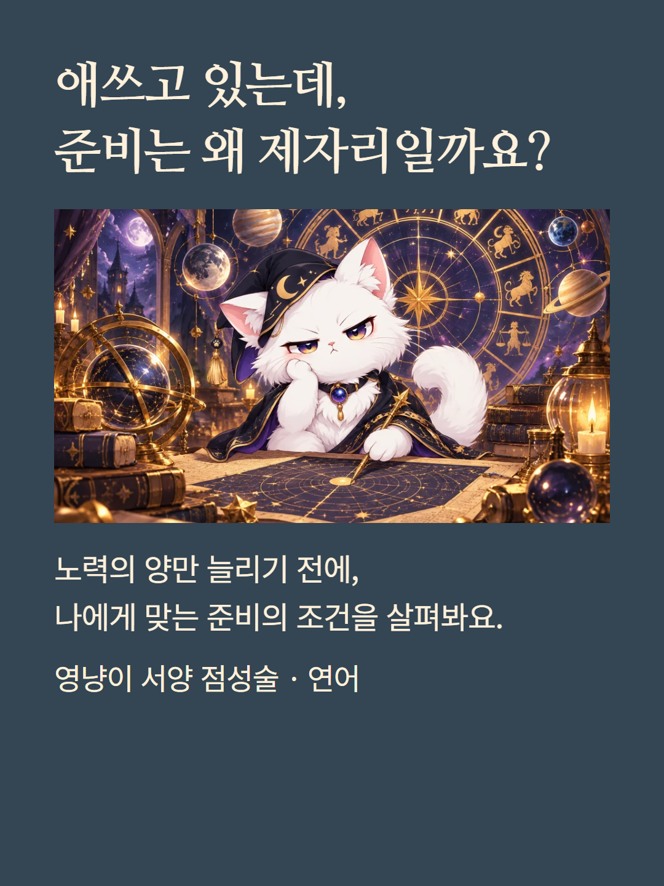
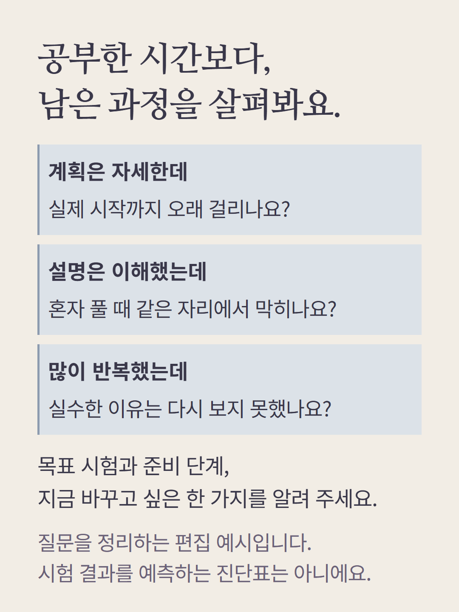
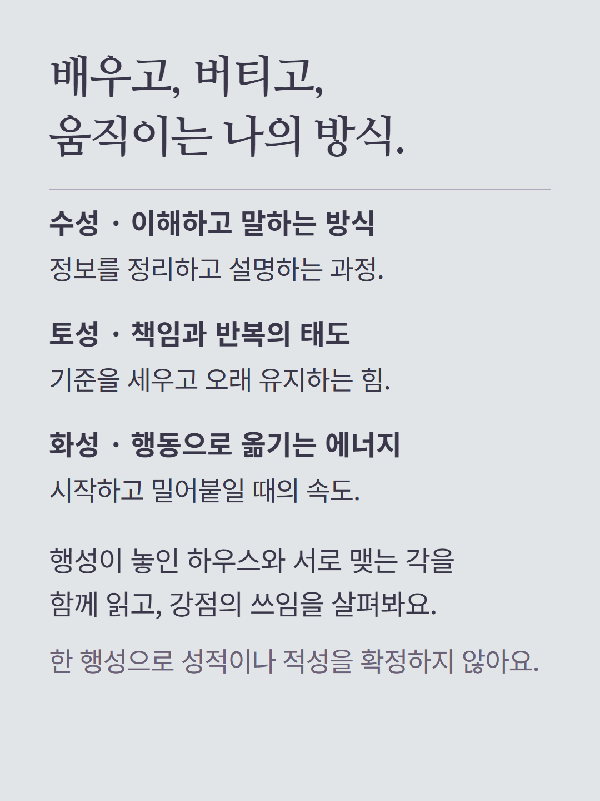
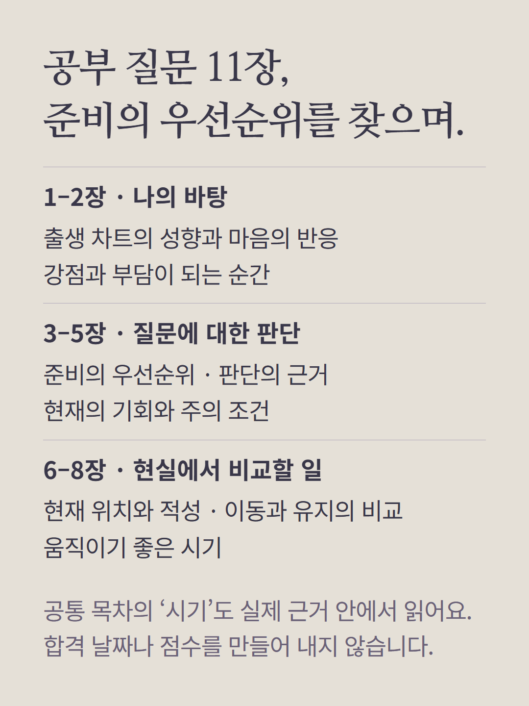
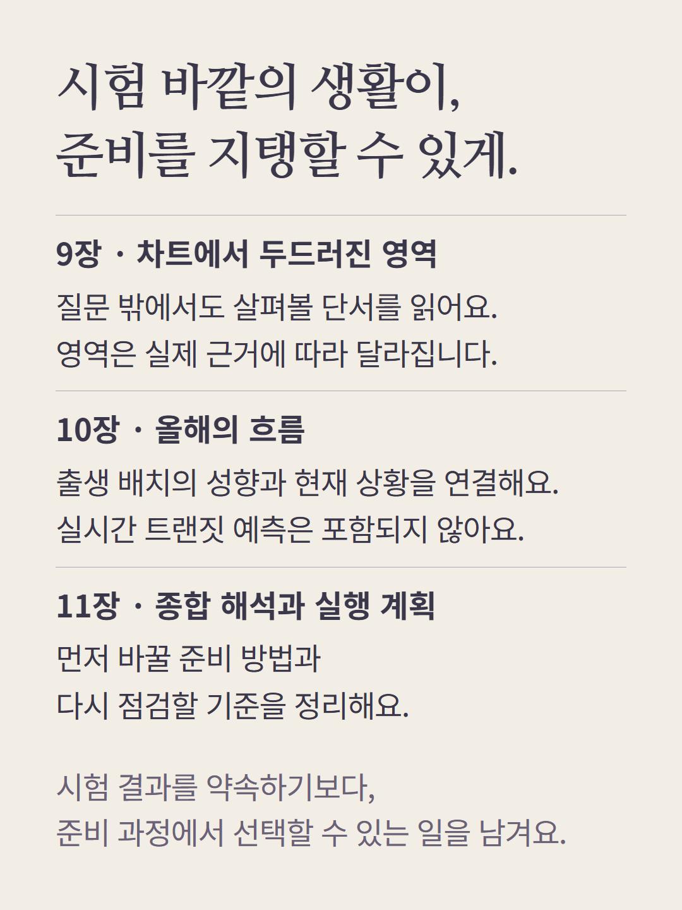
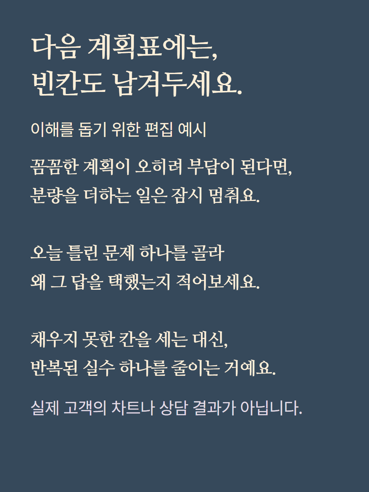
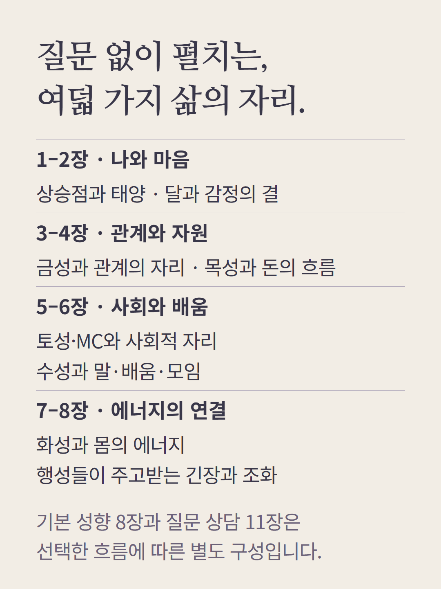
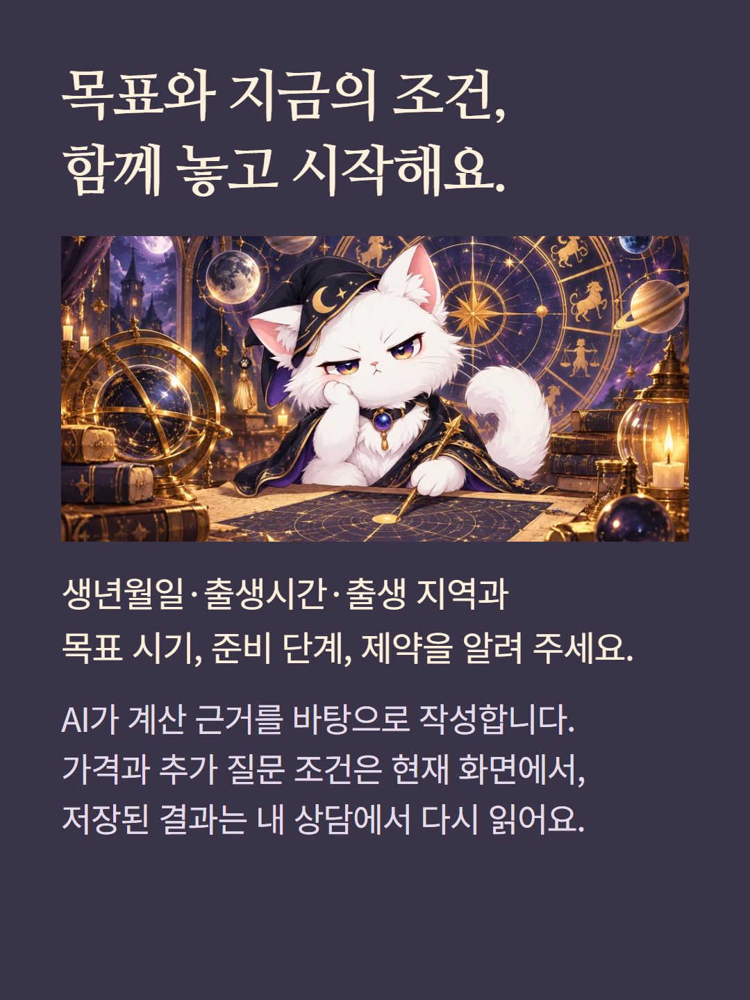

서양 점성술 연어는 시험·진로·재물·이동 등 선택의 조건을 살피는 질문 상담입니다. 이 안내는 공부·시험 질문 11장과 별도 기본 성향 리포트 8장을 소개합니다. 행성·하우스·각의 출생 배치를 해석하며, 현재 구성에 실시간 트랜짓은 없습니다. 목차에 시기·올해가 있어도 합격일이나 월별 사건을 예측하지 않습니다. 질문에 따라 목차가 달라지며 예시는 가상 편집입니다. AI 작성 상담이고 가격과 추가 질문 조건은 기존 화면을 따릅니다.